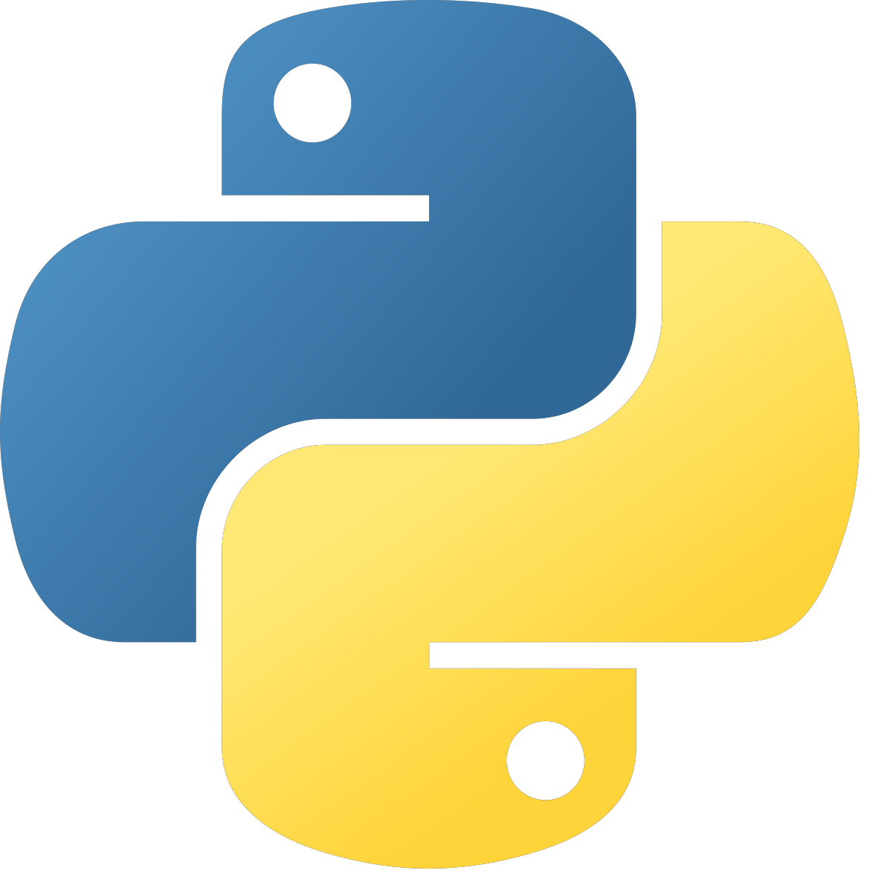
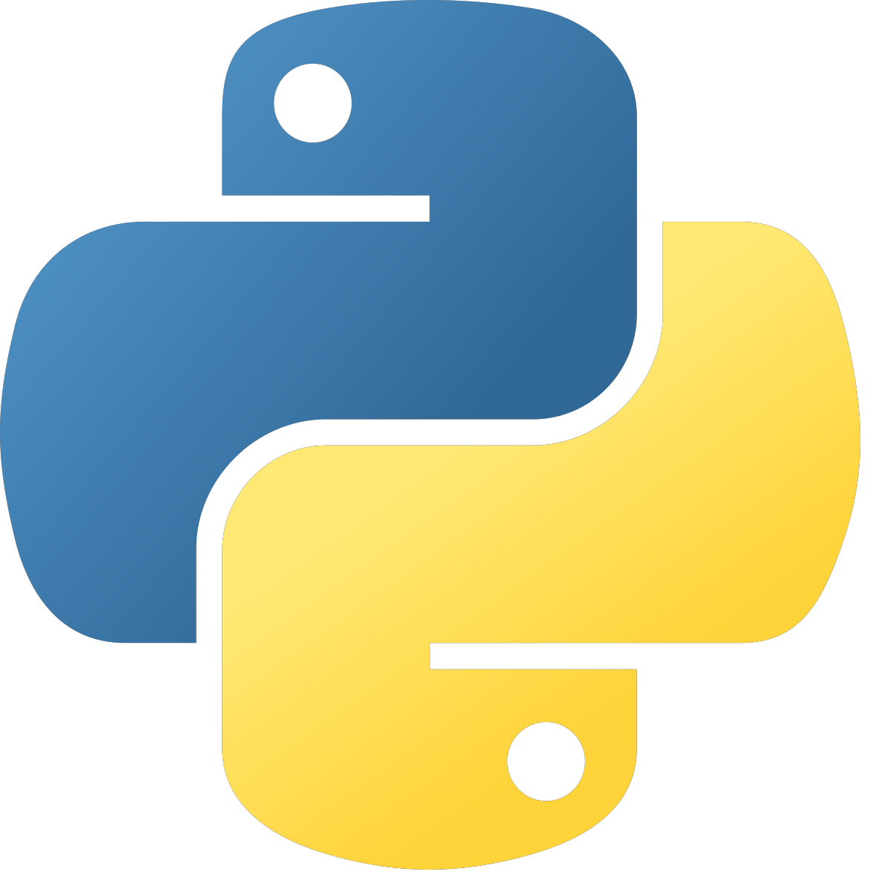

Sobre mi
Developer Junior
Académico
Técnico en programación
Estudiando en el Cecyt 9 "Juan de Dios Batiz"
Lenguajes de programación
 


Pasatiempos
Programación
Diseño gráfico
Producción musical
Escritura
Dibujo y animación
Mis gustos
Me considero una persona multi-facética, tengo muchos intereses que
a lo largo de mi vida, he ido retomado o dejando atrás.
Desde que tengo memoria, siempre me han gustado las cosas creativas, como dibujar,
pintar o diseñar pues me ayudan a expresarme, aunque recientemente, también me he
interesado en la parte de la música, especialmente la producción y composición.
Por otra parte, desde muy pequeño me han interesado las computadoras
y en general la informática, por ello, al escoger mi carrera técnica en la
vocacional, no me resulto complicado elegir la especialidad de Técnico en
Programación, que desde que inicié a cursarla, mi gusto por la programación
ha ido en aumento.